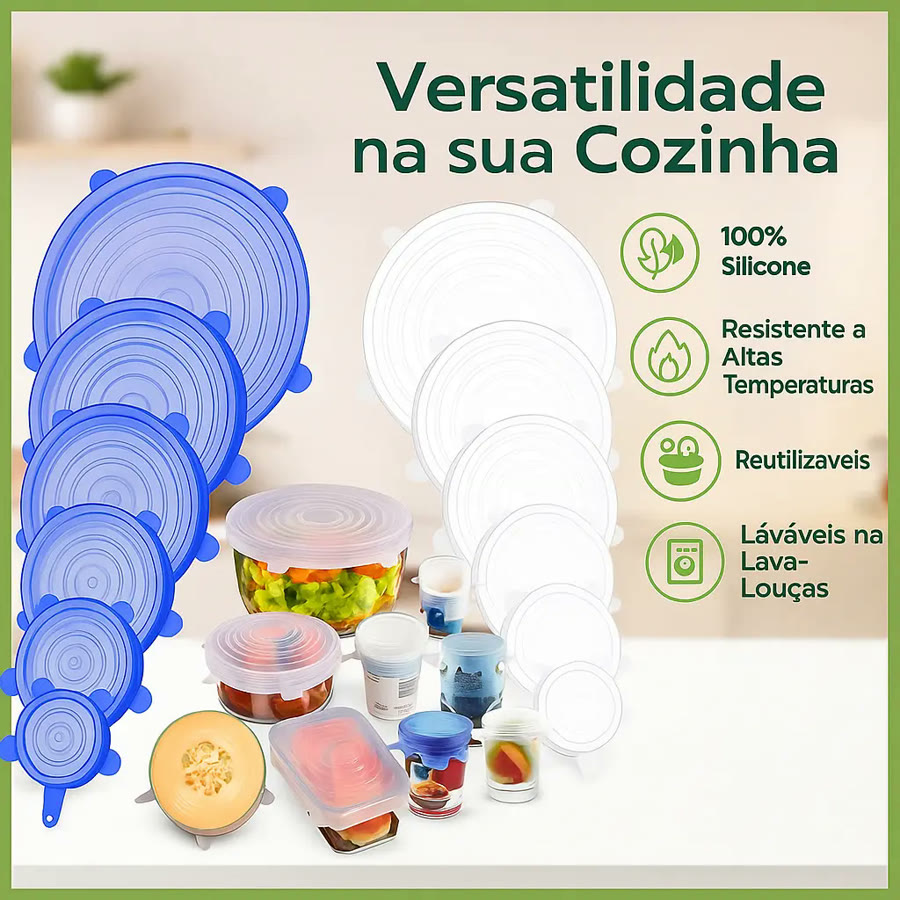
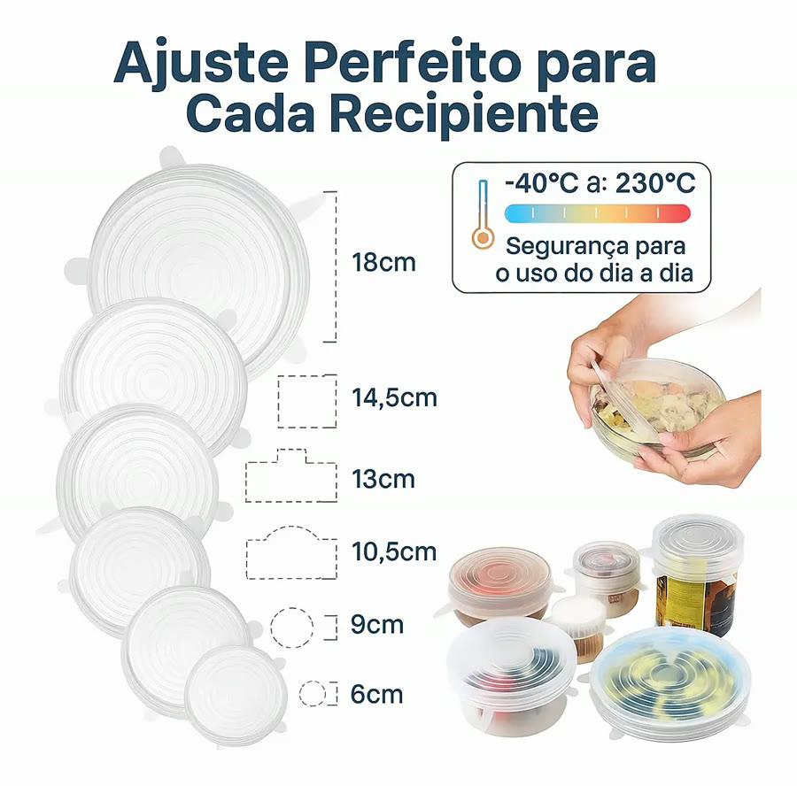
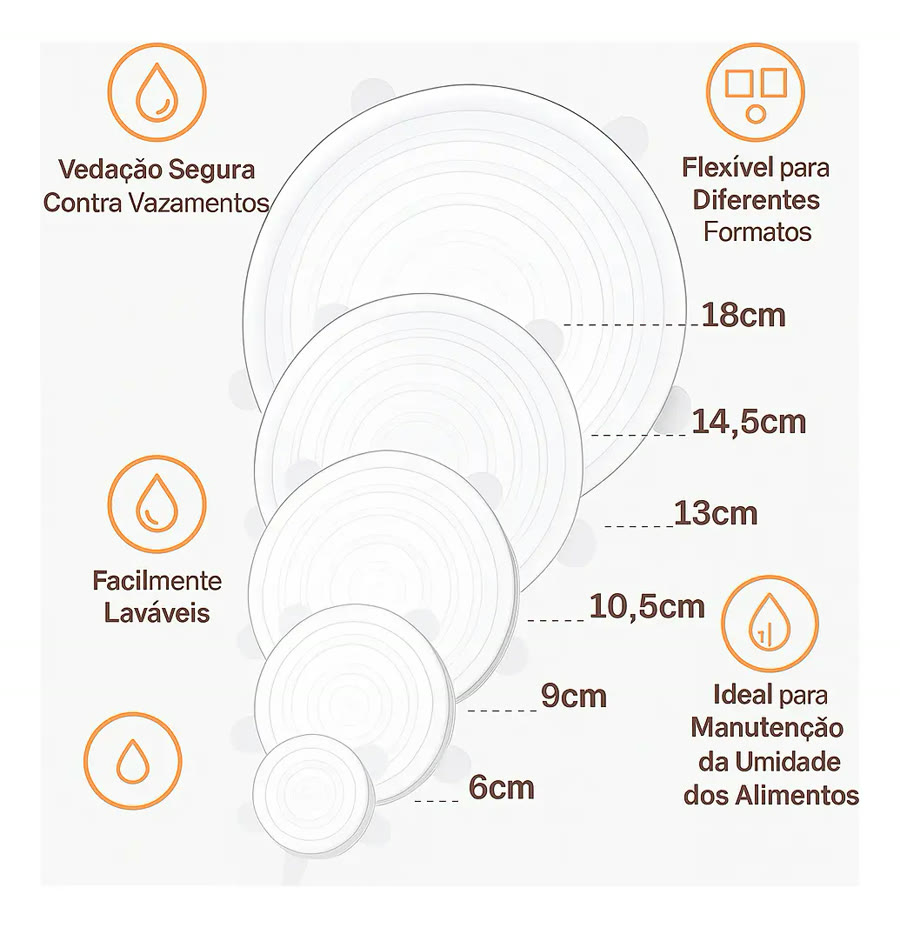
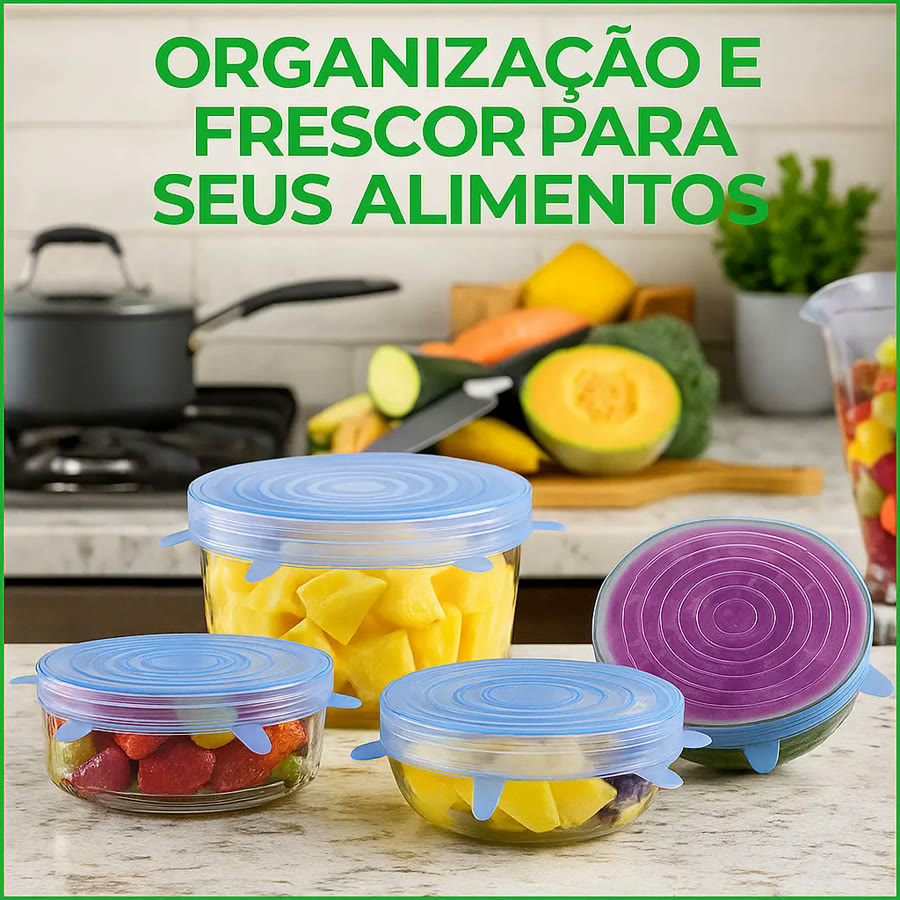

Achado nº 59
Kit 12 tampas de silicone elásticas para potes e panelas





O que diz a página oficial do produto
- É um kit com 12 tampas de silicone: 2 de cada um dos 6 tamanhos, de 6 cm a 18 cm
- Segundo o anúncio, elas esticam e se ajustam a potes, panelas e tigelas redondas, quadradas e retangulares
- Segundo o anúncio, aguentam de 40 graus negativos a 230 graus e podem ir à lava-louças
- Segundo o anúncio, são reutilizáveis e livres de BPA
- No Mercado Livre, tem nota 4,4 com mais de mil avaliações e mais de mil vendidos
Link de afiliado: se você comprar por ele, a Achadaria pode receber uma comissão, sem custo extra para você. Preço, estoque e entrega são da loja e podem mudar; confira lá antes de comprar.